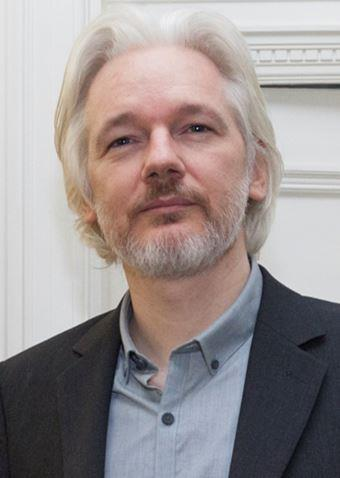
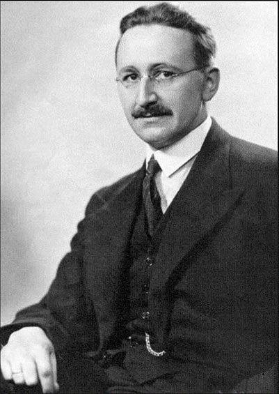
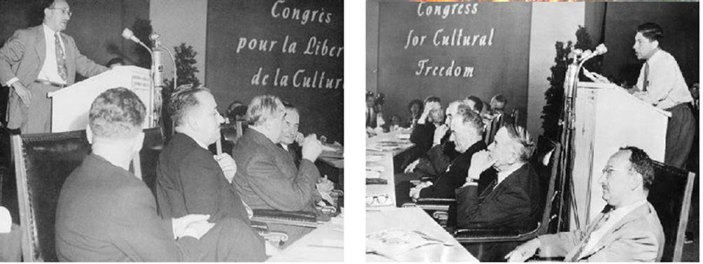
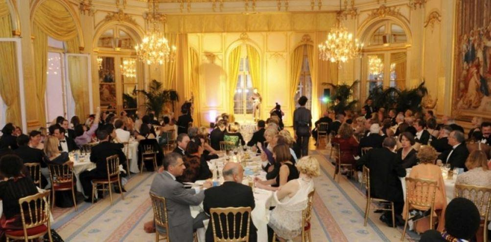
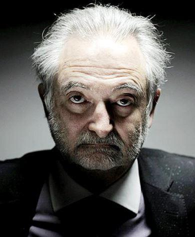
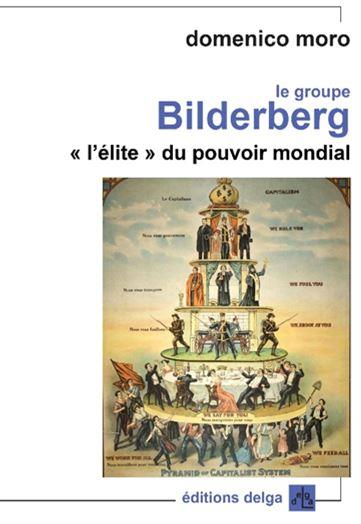
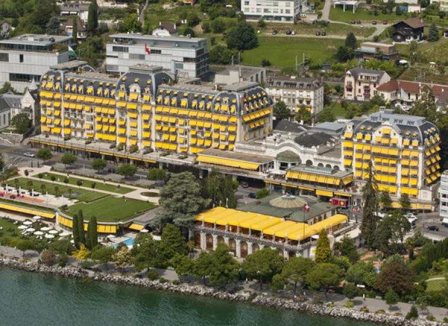
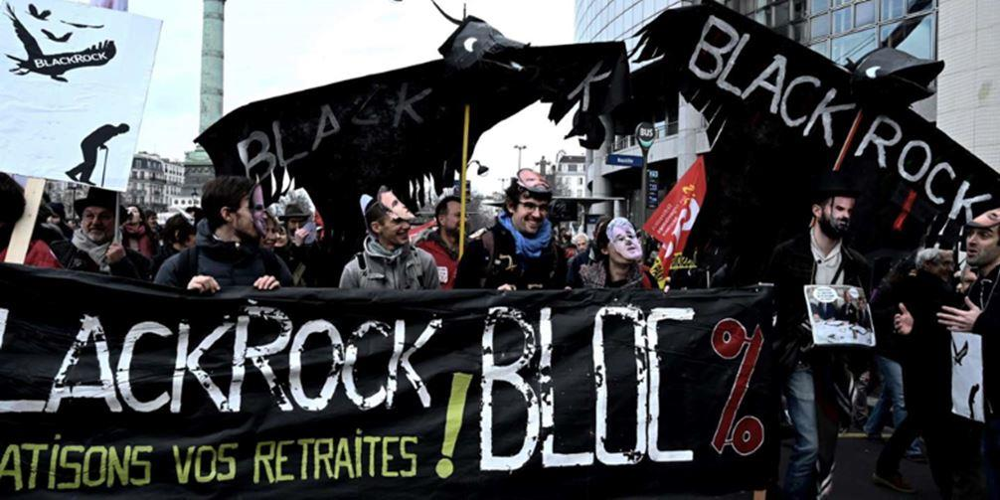

 Julian Assange
Grâce à ces remarquables lanceurs d’alerte que sont William Binney, celui qui le premier dénonça en 2002 la politique de collecte de données massives de la NSA, Thomas Drake, lui aussi de la NSA, qui dénonça le projet Trailblazer (la surveillance généralisée des télécommunications), Edgar Snowden, encore de la NSA, qui a révélé de la même façon la mise sous surveillance de l’ensemble des télécommunications privées mondiales, John Kiriakou qui accusa les États-Unis d’utiliser la torture de la simulation de noyade, Bradley Manning et Julian Assange, lourdement condamnés pour avoir mis en ligne des milliers de documents sur la corruption et les graves abus des institutions américaines er de leur politique internationale, nous sommes de plus en plus informés, à moins de jouer aux autruches et de refuser de voir le mur contre lequel nous allons tous nous écraser.
Mais d’autres aussi, moins connus, nous alertent, publiant livres, articles, s’exprimant hors des médias officiels (ceux qui collaborent avec ces institutions hautement néfastes au monde entier). Or une institution ne signifie rien en elle-même sans les hommes qui la dirigent, et aujourd’hui on en sait beaucoup plus sur les autorités occultes qui mènent le monde à sa perte.
Mais peut-être conviendrait-il d’en remonter à la source. De façon succincte, cela s’entend. Car nous ne pouvons en quelques articles écrire ce qui prendrait des livres entiers, et il appartiendra à nos lecteurs de nous pardonner ce survol. Nous ne prétendons nullement à l’exhaustivité, notre propos n’étant que de mettre en lumière certains aspects de cette politique dont les conséquences pourrissent nos vies.
Mais quoi qu’il en soit, l’origine du mal réside essentiellement dans l’élaboration de doctrines économiques effrayantes du fait qu’elles éliminent l’humain au profit du seul dieu FRIC, qu’on lui donne les surnoms de Dollar, d’Euro, de Marks (l’euro n’est que le mark étendu à l’ensemble de la communauté européenne). Le fondement du système réside dans les doctrines de l’ultralibéralisme et du néolibéralisme.
L’ultralibéralisme prône la déréglementation des marchés, la concurrence sauvage (laquelle à terme élimine tout le monde au profit de la plus grosse entreprise, placée alors en situation de monopole absolu qui lui permet d’établir les prix qu’elle veut au détriment des consommateurs), et la disparition progressive du secteur public au profit du secteur privé. Une catastrophe.
Le néolibéralisme, lui, né en partie en opposition au système soviétique, s’oppose principalement à l’État-providence (disons pour simplifier à l’État social) et à son interventionnisme pour laisser la place à l’initiative privée.
À l’origine de ces doctrines, Friedrich Von Hayek et Ludwig Von Mises, deux professeurs d’économie – entre autres – autrichiens, qui contribuent en 1938 au colloque Walter Lippman, lequel rassemble des universitaires opposés à l’intervention économique de l’État, en opposition au fascisme et au communisme. Sans doute ce pourrait être louable si le New Deal instauré par le président Roosevelt pour lutter contre le chômage considérable entraîné par la terrible crise de 29 n’était pas également dans leur ligne de mire. Les deux hommes se connaissent bien, et Hayek participe aux colloques organisés par Mises, dans lesquels se retrouvent également des économistes du monde entier, tels Jacques Rueff, Luigi Finaudi, Ludwig Erhard, Murray…
Et il est notable de signaler qu’en 1931 Hayek avait été nommé professeur à la London School of Economics, laquelle était financée par la Fondation Rothschild. Suivez mon regard.
Au sortir de la Seconde Guerre mondiale, les deux hommes se persuadent que le seul combat contre le communisme doit se jouer sur le plan économique, ce qui en soi n’est peut-être pas faux sauf que…
En 1944 Hayek publie The Road to Serfdom (en français : La route de la servitude), son credo, dans lequel il dénonce toutes les entraves mises par l’État sur les mécanismes d’un marché qui doit être libre.
C’est en même temps une mise en garde faite aux Anglais dont il est évident à ce moment que les élections seront remportées par le parti travailliste anglais l’année suivante : il leur annonce leur mise en servage quoique de façon moderne. Quant à Mises, proche de la Fondation Rockfeller , après avoir publié en 1944 un livre dans lequel il annonce la montée en puissance des bureaucraties, il expose en 1960 dans sa Constitution de la Liberté son programme qui fera écho à beaucoup d’entre nous : privatisation, déréglementation, diminution drastique des aides sociales et du pouvoir des syndicats, programme auquel il ajoutera en 1976 la dénationalisation de la monnaie et la privatisation des banques. Qui dit mieux ? Que cela vous rappelle-t-il ?
Or justement au sortir de cette guerre, l’État-providence se met en place. C’est ainsi qu’en France de nombreuses mesures économiques et sociales sont prises : nationalisation de banques, d’entreprises, (dont Renault), de l’énergie avec la création d’EDF et de GDF, la Sécurité sociale, des régimes de retraite, etc. etc. Mesures en totale opposition avec l’idéologie des hommes comme Hayek. Celui-ci voit s’éloigner les grands principes qu’il a mûrement développés et réagit en réunissant au Mont Pèlerin, en Suisse, les partisans de sa « doctrine de l’État minimal ».
On ne saurait s’étonner au regard du réseau tissé par Hayek que sa doctrine ait été adoptée par les gouvernements de Thatcher et de Reagan. Mais également par celui de Pinochet.
Dans cette société du Mont Pèlerin, qui se réunit pour la première fois en 1947, adhèrent tant des journalistes que des politiciens ou que nombre d’économistes dont huit obtiennent le « prix de la banque de Suède en mémoire d’Alfred Nobel » (vous savez, celui qui avait interdit de donner le moindre prix à son nom aux savants et intellectuels juifs et qui doit se retourner dans sa tombe tant les Juifs pourtant en ont obtenu).
Lors de la première réunion, on notera entre autres les noms de Ludwig von Mises bien sûr mais aussi de Karl Popper, le monétariste Milton Friedman, Maurice Allais, Lionel Robbins. William E. Rappard, Walter Lippman, Michael Polanyi, Wilhelm Röpke, tous hommes auxquels on attribue la tâche de divulguer la doctrine néolibérale. Par la suite d’autres se joindront aux réunions, comme James Buchanan. Inutile de préciser que ces réunions sont financées par des fondations : la fondation Trelm et Earhart, la fondation John Olin, la fondation Roe, la fondation Garvey, et d’autres encore, toutes issues de la même mouvance.
Tout cela en parfait accord avec la CIA qui organise entre les années 1950 et 1967, avec une partie des mêmes hommes, une autre organisation : le Congrès pour la liberté de la culture.

II. L’ultra-liberalisme dans la crise des années 70 et le règne des think tanks
On voit donc se mettre en place les structures de la domination économique du monde par des groupes de pression qui ne tarderont pas à influencer le monde politique afin de le faire adhérer à leur idéologie dévastatrice qui conduit aujourd’hui à la destruction de l’ensemble du tissu économique, bancaire, social, environnemental… L’ultra-libéralisme et son frère jumeau le néo-libéralisme sont certainement la pire catastrophe que l’humanité ait eu à affronter.
Curieusement dans les années 70 (dites années des crises pétrolières, mais notre propos n’est pas de rentrer dans les causes structurelles de la crise), le Royaume-Uni, sous l’impulsion de Margareth Thatcher, entre dans une sorte de révolution conservatrice. Le credo de Margareth Thatcher est totalement libéral : « Vous ne pouvez pas aller à l’encontre des marchés », proclame-t-elle, affirmant sa vision néo-libérale de la prééminence du privé sur le public et sa méfiance de l’intervention de l’État.
On lui reconnaît cependant son hostilité à l’indépendance de la banque centrale et au contrôle des banques sur les taux d’intérêt. Cependant le chômage, devenu très important, place les travailleurs dans une position intenable : puisque le travail manque, ceux qui veulent travailler n’ont qu’à bien se tenir et le rôle des syndicats faiblit considérablement. Comme dans les autres pays européens d’ailleurs.
Les think tanks – ou clubs de réflexion – néo-libéraux prennent alors du poil de la bête et Hayek redresse la tête. En 1974 il reçoit le prix Nobel, ce qui est également le cas de ses partisans Milton Friedman (1976), George Stigler (1982), James Buchanan, Maurice Allais (1988), Ronald Coase (1991) et Gary Becker (1992). Les choses sont claires. La crise des dockers anglais est assez symptomatique du thatchérisme : certes les dockers, de tradition et sans doute partout, bénéficient de quelques privilèges. Cependant dans son désir de réaliser des économies à tout prix, Thatcher introduit une politique d’une grande dureté à l’égard des classes les plus pauvres, ce que la Couronne affirme désapprouver, et laisse les dockers de Londres s’enferrer durant deux ans dans une grève qui les réduit à la misère (on peut légitimement supposer que c’est le modèle adopté par Macron avec les Gilets jaunes, à ceci près qu’il ne sent pas venir une révolution inscrite dans le sens de l’Histoire, ce qui n’était pas le cas des docker anglais).
Et Mitterrand qui peut avoir la dent dure dit de la fille de l’épicier qu’elle a le regard de Caligula. Le chanteur Renaud qui jouerait plus tard le rôle de Lantier dans Germinal et aimait les femmes parce qu’il pensait qu’elles ne sont pas guerrières, met de côté cependant la Thatcher. (« Femme je t’aime parce que Lorsque le sport devient la guerre Y a pas de gonzesse ou si peu Dans les hordes de supporters … à part peut-être Madame Thatcher »).
Le cas de la France est différent. Les années 70 voient fleurir les aides sociales, mais pour peu de temps. Car dès les années Mitterrand, la rigueur s’impose. Pas à la manière de Thatcher cependant, malgré l’apparition de think tanks néo-libéraux dont les noms des participants nous étonnent. Lionel Jospin, dans son livre « Le monde comme je le vois », écrit : « L’un des traits les plus originaux de la période, dans le champ des structures sociales, et qui est aussi l’un des plus troublants, est l’émergence d’un nouveau groupe dominant. Bien qu’il soit d’un type récent, il tend à emprunter certains traits des anciennes aristocraties. […] Sur le plan des principes, elle affirme le caractère fécond de l’inégalité. […] D’où émerge-t-elle ?
D’une alliance implicite entre des grands dirigeants d’entreprise, des financiers, des cadres élevés de l’industrie et des services, certains hauts fonctionnaires de l’État et des privilégiés des médias. »
Ainsi est créé en France Le Siècle, un club de réflexion auquel collaborent les plus grands noms de la politique, de l’industrie et des médias, qui se réunissent dix fois par an, le dernier mercredi du mois au Cercle de l’Union interalliée du 33 rue du Faubourg-Saint-Honoré à Paris. Fondé en 1944 par des résistants, et composé d’un nombre non négligeable de francs-maçons, ses objectifs initiaux – la réunion d’élites de tous horizons sociaux politiques – ont vite viré du côté d’un libéralisme exacerbé à partir des années 70. On ne s’étonnera donc pas qu’en fassent partie quasiment tous les inspecteurs généraux des finances, les dirigeants des plus importantes entreprises, ceux des services financiers, nombre de journalistes et de personnalités politiques. De syndicalistes, d’artistes, etc… Pouvoir occulte s’il en est.
La liste des participants ou ex-participants n’est d’ailleurs pas tenue secrète, et on la trouvera aisément sur Internet, en se disant : « Ah ! lui aussi ! ».
On y trouve en particulier et sans surprise parmi ses 500 membres cooptés auxquels il faut ajouter deux cents invités annuels : Martine Aubry, Manuel Valls, Michel Pébereau, Pierre Bilger, Louise Gallois, Guillaume Pépy, Yannick Bolloré, Philippe Bon, Laurent Fabius, Élisabeth Guigou, Olivier Dassault, Étienne Davignon qui siège aussi au Bilderberg, Claude Bébéar, Laurence Parisot, Gérard Worms, Jean Claude Trichet, Louis Gallois, Bernard Attali, Jacques Attali (le pape de l’ultralibéralisme), Dominique Strauss-Kahn, Pierre Moscovici, Jean-Pierre Chevènement, et autres Coppé, Juppé, Raffarin, Sarkozy, j’en passe et des meilleurs car je ne vais pas y inscrire le près des mille personnes qui en font ou en ont fait partie.
Mais il semble que beaucoup l’aient délaissé pour un think tank beaucoup plus inquiétant : le groupe Bilderberg, dans lequel se réunissent annuellement depuis 1954 non des centaines de dirigeants et de personnalités comme au Siècle, mais une centaine seulement. Sous très haute protection et de façon totalement opaque, les dirigeants et les principaux leaders économiques d’Amérique du Nord et d’Europe de l’Ouest décident de l’avenir du monde. Pour certains, ce serait un embryon du gouvernement mondial. Sa première réunion fut organisée près d’Arnhem par le prince Bernhard des Pays-Bas dont nul n’ignore le passé parfaitement nazi puisqu’il servit dans la cavalerie SS avant la guerre. Autrement dit un nazisme totalement assumé et choisi.
Le but de cette première réunion ? Se mobiliser contre le communisme à une époque où Staline avait des visées réelles sur l’Europe occidentale. OK, ça peut se comprendre, on est entrés dans la guerre froide qui oppose deux systèmes sur tous les plans, et on parle de monde bipolaire.
Cependant, ce que les participants ignorent alors, c’est qu’en arrière-plan se dissimule l’Otan, avec le double objectif de développer un libéralisme exacerbé en Europe et de créer la CED, communauté européenne de défense, afin de faire entrer dans l’Otan l’armée allemande que les décisions d’après- guerre avait interdite et démembrée. Car le commanditaire de l’affaire est Charles D. Jackson, le conseiller en guerre psychologique de la Maison-Blanche, et son metteur en scène William Donovan, ancien commandant de l’OSS chargé en outre de créer le Gladio dont nous parlerons dans la prochaine partie.
Ainsi le prince Bernhard n’est-il qu’un pantin. Ce qui signifie que la véritable gouvernance mondiale à travers le groupe Bilderberg, c’est l’Otan, et que les participants lui servent de lobbyistes. En ont-ils conscience dans les débuts du Bilderberg ? Je ne le crois pas. Savent-ils qu’ils sont manipulés ? Je ne le crois pas davantage. Mais d’autres sont parfaitement au parfum, parmi lesquels David Rockefeller, dont la fortune alors est bien inférieure à ce qu’elle est devenue par la suite avec les effets d’une mondialisation exacerbée.
La seconde tenue du groupe a lieu en 1955 en France, à Barbizon, dans un déploiement exacerbé de forces militaires, et l’on décide de se réunir annuellement en invitant certaines personnalités dont l’influence peut être favorable aux objectifs du groupe, donc des Américains.
En vrac on y trouve des banquiers européens et américains, des hommes politiques de premier plan (Premiers ministres, ou Présidents, ou députés dont le vote sera favorable aux plans du groupe, ambassadeurs, commissaires européens dont on comprend l’importance dans une structure si peu démocratique dans laquelle le pouvoir est essentiellement détenu par des non élus, mais aussi Hillary Clinton et Barack Obama), les directeurs des plus grosses sociétés mondiales, dans tous les domaines (pharmacie, informatique, aéronautique, automobile, télécommunications, agro-industrie, etc…), les directeurs de presse, les directeurs des principales sociétés financières, des universitaires qui peuvent influencer leurs étudiants.
Mais si le groupe Bilderberg s’est constitué en opposition à l’expansion communiste en Europe, pourquoi existe-t-il toujours aujourd’hui puisque les États communistes d’Europe ont disparu dès les années 90 ? Ce groupe n’aurait-il pas dû être dissous ?
L’explication est bien entendu moins jolie qu’on pourrait le croire : le groupe n’a qu’une visée réelle : celle d’étendre l’influence étasunienne en Europe, et bien entendu de sa créature : l’Otan.
III. Quand un juge italien découvre un groupe armé créé par l’OTAN
La société du Mont-Pèlerin, le Siècle, le groupe Bilderberg ne sont pas les seules créations largement inspirées par l’Otan passé maître dans l’art des coups fourrés. En 1972, trois carabiniers italiens sont les cibles d’un attentat qu’on met faussement sur le compte des Brigades rouges. Dans le petit village de Peteano, ils sont informés par un appel anonyme de la présence d’une Fiat 500 abandonnée, et ayant essayé d’en ouvrir le coffre, ils sont victimes d’une explosion qui fait parmi eux un mort et un blessé. Un piège pour les trois pauvres types. L’un meurt, l’autre est sérieusement blessé. Deux jours plus tard, un autre appel anonyme revendique l’attentat au nom des Brigades rouges, un organisme terroriste d’extrême gauche qui s’est rendu célèbre par des prises d’otages et des assassinats planifiés de hauts personnages de l’État italien. Certes ce ne sont pas des innocents, mais ils ne sont cependant pas responsables de l’attentat de Peteano. On l’apprendra des années plus tard.
Les ruines de la gare de Bologne après sa destruction par les terroristes de l’OTAN (1980)
Cet attentat n’est pas le seul perpétré dans les années 70. Des bombes ont déjà explosé à Rome, à Milan où elles ont tué à l’aveugle 6 innocents et blessé quelques 80 passants, et après Peteano d’autres attentats très meurtriers ont lieu, notamment le plus sanglant à Bologne où en 1980 on relèvera 85 morts et plus de 200 blessés. Mais déjà, dès l’affaire de Peteano, des bruits couraient sur la collusion des services secrets italiens et en 1974, le juge Tamburino inculpe le général Vito Miceli, chef du SID, pour avoir « promu, mis en place et organisé, avec l’aide de complices, une association secrète regroupant civils et militaires et destinée à provoquer une insurrection armée visant à modifier illégalement la Constitution et la composition du gouvernement », accusations que le général reconnaît par ces mots : « Si je disposais d’un super-SID sous mes ordres ? Bien sûr ! Mais je ne l’ai pas monté moi-même dans le but de tenter un coup d’État. Je n’ai fait qu’obéir aux ordres des États-Unis et de l’Otan » !
Mais revenons à l’affaire de Peteano. En 1990 le juge Casson relance l’enquête. Il a découvert de nouveaux éléments, et des irrégularités du dossier l’intriguent passablement. Il se rend compte en particulier que les expertises sont volontairement falsifiées et que l’explosif utilisé, loin d’être celui que les Brigades rouges emploient d’habitude, est l’un des fleurons du matériel de l’Otan.
Sans entrer dans les détails de son instruction, Casson met donc en évidence le rôle joué par des groupuscules italiens d’extrême droite armés et dirigés par l’Otan, et il parvient à identifier le poseur de la bombe de Peteano : Vincenzo Vinciguerra, qui ne tarde pas à tout déballer. Et les déclarations de l’homme sont particulièrement explicites : « C’est tout un mécanisme qui s’est mis en branle, ça signifie que, des carabiniers au ministre de l’Intérieur en passant par les douanes et les services de renseignement civils et militaires, tous avaient accepté le raisonnement idéologique qui sous-tendait l’attentat. »
Il explique que le réseau d’extrême droite auquel il appartient, Ordine Nuovo, mais d’autres groupes nationalistes aussi tels que Avanguardia Nazionale, ont étroitement collaboré avec les services secrets italiens (le SID) pour préparer l’opération, et qu’une armée secrète stay-behind, organisée secrètement par l’Otan, porte en Italie le nom de code GLADIO (« le glaive »).* Bref on s’est retrouvé dans les années 70 entre un terrorisme d’extrême gauche représenté par les Brigades rouges, qui d’ailleurs sont défaites au bout de quelques années par le pouvoir, et les réseaux fascistes du Gladio chapeautées par l’Otan. Aussi le juge Casson dénonce-t-il un véritable terrorisme d’État, financé par l’argent des contribuables et visant à à créer « un climat de tension » dans la population. Personnellement je remplacerais le mot « tension » par « terreur », mais c’est le terme qui a été adopté par les commanditaires. Travail difficile pour Casson car durant le procès, de nombreux documents disparaissent.
En août 1990, sommé de s’expliquer devant la commission parlementaire, le Premier ministre Andreotti confirme que le Gladio agit sur ordre de l’Otan. C’est énorme ! Par Andreotti on apprend que le Gladio, organisé comme une armée, dispose d’un arsenal considérable fourni par la CIA et enterré dans 139 caches, dont celle qui vient d’être déc ouverte et a relancé l’instruction. L’emplacement de ces caches relevait de la plus pure fantaisie, selon les lieux où les participants au Gladio étaient installés sur le territoire italien, et on n’a pas de mal à imaginer de tout petits groupes allant enterrer la nuit, dans le plus grand silence, cet armement secret au milieu de forêts dont on marquait les arbres, dans des cimetières avec la complicité des curés, au milieu de champs privés et donc interdits de passage, ou ailleurs.
L’armement était de toutes sortes, du plus lourd au plus léger, comme pour la préparation d’une guerre contre des futurs envahisseurs. Le peuple italien se montra outré par les révélations d’Andreotti, donnant lieu à de nombreuses manifestations et à la recherche des caches, avec bien entendu beaucoup d’excès. Pris de court cette année 1990, Andreotti, Premier ministre ordonna ″d’informer le parlement dans les 60 jours à venir au sujet de l’existence, des caractéristiques et des raisons d’être d’une structure parallèle occulte dont on dit qu’elle a opéré au sein de nos services de renseignements militaires, avec l’objectif de conditionner la vie politique du pays.″ S’ensuit une longue instruction.
Dès lors l’affaire prend un tour nouveau. En 2002 Andreotti, âgé de 83 ans, est condamné à 24 ans de prison après avoir révélé être à l’origine de l’assassinat d’Aldo Moro, le président de la République italienne. Lors du procès les juges, menacés de mort, sont placés sous une étroite protection. Mais si durant le procès Andreotti affirme la disparition des réseaux Gladio en 1972, les enquêtes menées par les journalistes démontrent le contraire. Et aujourd’hui encore le Gladio serait toujours actif.
La guerre souterraine ne s’encombre ni d’humanité ni de morale. Il faut faire exploser la chair des innocents afin d’effrayer. Une façon de convaincre les populations de la nécessité d’agir. Mais ceux que l’on vise dans les années 1990, ce ne sont pas les véritables coupables mais les ennemis idéologiques. Et dans ce monde bipolaire, ce sont les gauches. Lorsque éclate le rideau de fer, tout pourrait s’arrêter sauf que l’Otan a de nouvelles visées : affaiblir une Russie qui contrôle les ressources de son aire, pétrole, gaz naturel, eau, et étendre le pouvoir des oligarques sur l’ensemble de l’Europe.
Or le mécanisme mis en place est bien rodé : celui de faire des victimes afin de justifier intervention et répression, une répression parfois totalement inique. Ainsi, pour certains spécialistes très pointus, le 11 septembre sera la justification des attaques contre l’Irak. Ou encore cette affaire des plus troubles du stade de France en 2015 dans laquelle le dossier judiciaire comporte des contradictions et soulève plus de questions qu’il n’apporte de réponses. Entre autres. Car les exemples ne manquent pas.
Et c’est bien ce que le terroriste Vincenzo Vinciguerra avait révélé : ″Il fallait s’en prendre aux civils, au peuple, aux femmes, aux enfants, aux anonymes sans lien avec un quelconque jeu politique. La raison en est très simple, c’est censé forcer les gens, le peuple italien, à se tourner vers l’État pour demander plus de sécurité. C’était la logique politique derrière tous ces massacres et les attentats à la bombe qui restèrent impunis, du fait que l’État ne peut pas s’accuser lui-même, ou se déclarer lui-même responsable pour ce qui s’est passé.″
IV. Une pression économique sans borne
Le magazine Forbes, destiné principalement aux grandes fortunes, a établi une fois de plus la liste des 50 personnes les plus riches du monde. Le premier cette année est Jeff Bezos, le patron d’Amazon, qui pèse 160 milliards de dollars, suivi de près par Bernard Arnault – 100 milliards – puis par Bill Gates – 96,5 milliards. Et 2 153 milliardaires ont été comptabilisés – la population d’un tout petit village – pour un total de 8,7 billions de dollars soit 8 700 milliards. Nous sommes ici dans des chiffres à 12 zéros. 8,7 billions, cela s’écrit 8 700 000 000 000. Une situation parfaitement anormale au regard de l’histoire.
Un calcul rapide montre qu’à eux seuls ces 2 300 milliardaires disposent d’autant que les budgets de plus de 150 États les moins riches sur un total de 207 d’après les chiffres 2019 donnés par la banque mondiale. Afin de se rendre compte de ce que cela signifie, le total des PIB de l’ensemble de ces pays est égal à quelques 8,5 billions de dollars (il s’agit des PIB par État et non par individu) :
Pakistan, Chili, Finlande, Bangladesh, Égypte, Vietnam, République tchèque, Roumanie, Portugal, Irak, Pérou, Grèce, Nouvelle-Zélande, Qatar, Algérie, Kazakhstan, Hongrie, Hongrie, Koweït, Ukraine, Maroc, Équateur, Angola, Slovaquie, Porto Rico, Cuba, Sri Lanka, Kenya, Éthiopie, République dominicaine, Oman, Guatemala, Syrie, Birmanie, Luxembourg, Ghana, Bulgarie, Panama, Croatie, Costa Rica, Biélorussie, Uruguay, Tanzanie, Liban, Macao, Slovénie, Lituanie, Serbie, Ouzbékistan, Libye, Azerbaïdjan, Tanzanie, République démocratique du Congo, Côte d’Ivoire, Jordanie, Paraguay, Soudan, Turkménistan, Tunisie, Bolivie, Cameroun, Bahreïn, Lettonie, Zimbabwe, Estonie, Népal, Ouganda, Yémen, Zambie, Salvador, Micronésie, Cambodge, Chypre, Sénégal, Honduras, Nouvelle Guinée, Trinité, Bosnie-Herzégovine, Botswana, Afghanistan, Laos, Mali, Gabon, Géorgie, Jamaïque, Malte, Namibie, Albanie, Burkina Faso, Brunei, Maurice, Mozambique, Mongolie, Nicaragua, Macédoine nord, Guinée équatoriale, Bahamas, Arménie, Madagascar, îles Anglo-Normandes, Moldavie, République du Congo, Tchad, Guinée, Haïti, Bénin, Rwanda, nouvelle Calédonie, Niger, Kirghizistan, Kosovo, Tadjikistan, Somalie, Malawi, Érythrée, Île de Man, Liechtenstein, Monaco, Mauritanie, Maldives, Monténégro, Fidji, Togo, Barbade, Sierra Leone, Îles Vierges des USA, Guyana, Liberia, îles Caïmans, Burundi, Andorre, Surinam, les Mariannes du nord, Antigua-et-Barbuda, îles Seychelles, Gambie, Guinée Bissau ; îles Salomon, Grenade, Comores, Saint Christophe, Vanuatu, Samoa, Saint Vincent, Samoa américaines, Dominique, Tonga, Sao Tomé, Palaos, îles Marshall, Kiribati, Nauru, Tuvalu. (J’ai dû en oublier quelques-uns).
Et la fortune de ces 2 300 milliardaires représente plus que les PIB de tous les États cités ci-dessus.
Si l’on se rabat sur les 100 hommes les plus riches de la planète, ils possèdent ensemble près de 1 700 milliards de dollars. Peut-on imaginer monde plus fou ? Sans doute une partie de leurs avoirs est-elle constituée en actions et en obligations, et il va de soi que lorsque la Bourse s’écroulera, ce qui ne tardera sans doute pas, ces avoirs disparaîtront comme l’air d’un ballon qui se perce, mais tout de même ! Bon, cela serait finalement de peu d’importance si les sociétés possédées par ces hommes ne prétendaient pas influencer nos vies, les diriger, décider ce que l’on a le droit ou non de dire sur la toile, et même ce que nous devons penser. Ce serait de peu d’importance si ces hommes, à travers leurs sociétés, n’exerçaient pas une pression intolérable sur nos hommes politiques, nos journalistes, nos grands dirigeants qu’ils tiennent dans leurs mains, pour imposer un système économique inhumain qui les enrichira encore plus au détriment des populations, des gens au travail, des esclaves des pays dits en développement. ¨
Pour appréhender ce pouvoir exorbitant, prenons l’exemple de Black Rock.
Black Rock, c’est une société privée qui pèse 6 300 milliards de dollars d’actifs. 6 000 000 000 000 $, un nombre à 12 zéros. Quasiment le triple du PIB de la France. C’est colossal et difficilement croyable. C’est une société new-yorkaise introduite en bourse en 1999, il y a vingt ans seulement, et dirigée par Lawrence Fink. Black Rock n’est pas une banque, ce qui lui épargne les contrôles, c’est une société financière qui travaille avec l’argent des épargnants mais aussi des très grosses entreprises, pour lesquels elle fait des investissements, notamment dans les fonds de pension, ce qui fait que c’est cette société qui verse leur retraite à beaucoup de monde. Dans cette spirale infernale, Black Rock est contrainte de gagner toujours plus, ou au pire de ne jamais perdre des actifs, car sa responsabilité est considérable et de ce fait dangereuse pour elle. Aussi ses employés sont-ils soumis à une pression intense. Oui, c’est bien une spirale infernale.
La puissance de Black Rock est telle que cette société possède des parts importantes de Microsoft, de Yahoo, d’Apple, d’Adidas, dont elle est actionnaire majoritaire, et siège aux conseils d’administration de 1 700 entreprises, dont de nombreuses sociétés françaises parmi lesquelles Danone, Legrand, Axa, Renault, BNP, Publicis, Société générale, Michelin, Cap Gemini, Saint Gobain, Sanofi, Total, Valeo, Bouygues, Scheider, Unibail, Vivendi, Solvay, Lafarge, Air Liquide, Michelin, Safran.
Qui dit mieux ? Comme le monstre dirige en grande partie des entreprises qui semblent concurrentes mais en définitive ne le sont pas puisque appartenant aux mêmes mains, la concurrence normalement favorable aux consommateurs ne parvient plus à jouer son rôle. Et pas de concurrence, cela signifie que les fournisseurs sont en situation de quasi-monopole, pouvant imposer les prix qu’ils veulent. Les prix augmentent donc. Trop. Et les peuples ne s’y retrouvent plus. Révoltes des Gilets jaunes. Mais ils ne sont pas les seuls.
Black Rock fait partie des « Big Three » avec Vanguard et State Street. À eux trois ils gèrent 14 000 milliards de dollars. Black Rock investit partout dans le monde, dans la forêt amazonienne, au Mexique, en Europe, aux États Unis, partout ! Et dans tous les domaines-clés, informatique, énergie, banques, centres de recherche, universités pharmacie, immobilier. Des sommes considérables. Et les hommes politiques, prêts à favoriser l’emprise croissante de Black Rock, lèchent les pieds de Larry Finch. Plusieurs fois Macron a reçu Larry Finch à huis clos. Pour lui céder ADP ? Et puis quoi encore, nul ne le sait.
D’ailleurs le Président Macron a nommé à la tête de la commission des nationalisations l’un des plus importants dirigeants de Black Rock, Jean François Cirelli. Mais, non, ce n’est pas un complot. Seulement une grosse, une énorme magouille dont on aimerait connaître les rétrocessions. Vu que Black Rock pèse 6 000 milliards, quelques millions tombés par-ci par-là ne lui coûtent certainement que peu. AU demeurant en avril 2017 à la télévision suisse, l’ancien président de la banque nationale suisse, Philippe Hildebrand, devenu vice-président de BlackRock, avait affiché avant les présidentielles sa préférence pour le candidat Macron.
Aussi pourra-t-on citer Marianne qui fort justement publiait le 5 décembre 2017 dans un article intitulé « Comment Macron et ses principaux ministres ont bichonné le gotha de la finance » : « À l’heure où l’État s’apprête à privatiser quelques fleurons, l’enjeu était à l’évidence d’obtenir quelques milliards d’investissement de la part de Black Rock et ses confrères. Espérons que les révérences en ont valu la chandelle. 1»
Ceci n’est qu’un survol de la puissance de Black Rock, et cette société n’est pas la seule à faire pression sur nos hommes politiques afin que ceux-ci protègent leurs intérêts et leur idéologie du néo-libéralisme. De telles puissances privées se rapprochent singulièrement de ce que appelait Big Brother : une conglomérat de sociétés et de dirigeants en petit nombre organisant dans le monde des politiques favorables à leurs activités et imposant aux peuples un mode de vie et de pensée qu’ils n’apprécient pas mais qu’ils ont des difficultés à mettre en cause sous la menace de se voir traités de complotistes.
Partager cette page